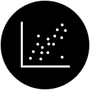

This document is a work in progress. Questions and feedback are welcome! Please send comments to styleguide@fizz.studio.
Select your chart types
Pick a chart type. If you're mixing two or more chart types in the same chart (like a combined line and bar chart), select both.
line
bar
pie / donut
gauge
percentage

scatterplot
table
Chart types
Line charts
A line chart shows changes and trends over a sequence of values in a series. Line charts (or line graphs or line plots) use a series of line segments to connect individual record points over a series of changes, usually over time, where the position of each record represents the value. These record points are often represented by a symbol, such as a circle or square, and each series of data should use a different symbol, as well as a different color, to distinguish it from other series lines.
In a horizontal line chart (the most common), each record point's numerical value is measured in its height (the y axis), while its place in the sequence (e.g. the date or time) is shown in its horizontal position (the x axis). Rarely, in a vertical line chart, the axes would be reversed; this is unconventional, and should be avoided.
Each record and line segment is ordered. For a time series, each line segment is ordered chronologically.
Multiple categories can be shown, with each data line in the chart representing the records in the series for that category. Too many lines can obscure the data (see "spaghetti charts").
TODO
Ideal use cases
Representing a trend in data over intervals of time (a time series), where each line segment is ordered chronologically
Accessibility considerations
Favor direct labeling instead of legends
For line charts with more than one line, placing the series label end of the line, or sometimes along the line, reduces the cognitive load in associating each line with its category. Using legends with keys, rather than direct labeling, separates the representation (the line) from its referent, forcing the user to remember the color or symbol, or to actively refer back to the legend.
TODO Show illustration of direct labeling vs. legends.
Symbols: One way to differentiate lines in addition to color is to use a different symbol for each line, positioned at each data record point. Common symbols include circles, squares, triangles, diamonds, and crosses; these symbols can be filled or unfilled, or a combination to add more variety (cite study on effective use of symbols).
Option: Use finial symbols instead of direct labeling: When a legend is necessary, or when symbols at each data record cause visual clutter, you can consider using a single finial symbol at the end (or beginning) of each line.
Grayscale colors for print: .
Patterns for tactile print: .
TODO Show illustration of colors and symbols.
Avoid "spaghetti charts"
A spaghetti chart is a line chart containing many data lines displayed with equal emphasis. Line charts with 5 or fewer data lines (i.e. categories or series) are most likely to provide clear patterns or trends to the reader, with more than that creating clutter and obscuring trends.
Not only are spaghetti charts too visually complex, but they present a challenge to find enough distinct colors and symbols to distinguish one line from another.
TODO: Show illustration.
Avoid dash patterns to differentiate lines
In data visualization, dashed lines are normally used categorically to indicate uncertainty, such as projected data, estimated data, or missing data, or to indicate a threshold or reference line. Using them to distinguish between different lines conflicts with this semantic convention.
In addition, they create visual clutter (see element interactivity (TODO), and more than 2 or 3 dashed patterns are difficult to distinguish or remember.
Avoid symbol patterns to differentiate lines: Similar to dash patterns,
TODO: Show illustration of proper and improper use of dash patterns.
Variations
No common variations.
Bar charts
A bar chart uses rectangular bars to show discrete, numerical comparisons across categories. The height (or length) of the bar indicated the numerical value. One axis of the chart shows the specific categories being compared (the independent variable), and the other axis represents a discrete value scale (the dependent variable).
In a vertical bar chart, also called a column chart, the categories are on the x-axis, and the value being
measured is on the y-axis.
In a horizontal bar chart, the value being measured is on the x-axis, and the categories are on the y-axis.
Do: single color for same category
A bar chart is one of the most common types of data visualization, since it is well-known and well-understood by readers, is easy to create and interpret, represents multiple ranges of data accurately, and uses space efficiently.
Bar chart grouping
Bar charts can be used for single-series or multi-series datasets; for multiseries datasets, group each series as stacked bars or grouped bars.
Bar chart ordering
When a bar chart is not being used for time-series trend data, it can aid ease of interpretation to order the bars by value, sorting either ascending or descending. Avoid sorting the order if a bar chart is used in a context where the implicit order is significant, such as when two charts are presented to compare with one another.
Ideal use cases
showing the relationship between a numeric and a categoric variable
showing trend over time
Accessibility considerations
Favor direct labeling instead of legends
For bar charts with more than one bar, placing the series label end of the bar, or sometimes along the bar, reduces the cognitive load in associating each bar with its category. Using legends with keys, rather than direct labeling, separates the representation (the bar) from its referent, forcing the user to remember the color or symbol, or to actively refer back to the legend.
TODO: Show illustration of direct labeling vs. legends.
Labels
Labels should be clearly associated with their indicated bar. Bars should be placed relative to their axis
labels, and value labels for the bar should be directly positioned with the bar (show diagrams with options).
Labels should be of sufficient size to be easily legible (quote WCAG here)
With a large number of bars, labels may be too small to read, may overlap each other, or may otherwise not be
legible. If label space becomes an issue, consider using a horizontal bar chart, or use a smaller number of
bars, either by aggregating data, splitting the chart into multiple bar charts, each with its own facet.
Screen readers
For screen reader users, a bar chart must include each value, in the same sequence as the visual rendering, labeled with the category and any group identifier. This can be done either with an accessible chart (possible with SVG) or an equivalent table.
Summaries
For screen reader users and people with cognitive disabilities, a bar chart must include a summary,
Variations
Stacked bar
This is for data with multiple series.
Grouped bar
This is for data with multiple series.
Horizontal bar
Pie and donut charts
Pie chartDonut chart
A pie chart or donut chart uses proportional sectors (or "slices") of a circle to show proportions and percentages between categories. Each slice represents a category, with its proportion measured by its arc length, with the full circle representing the total sum of all catgories the data, which must total 100%.
A pie or donut chart is most effective for 2-3 slices, and should not have more than 5 or 6 slices. Very small slices should be aggregated into a single slice, labeled "other" or something similar.
A pie chart and a donut chart differ only visually. A pie chart uses triangular wedges that extend to the center of the circle, while a donut chart has slices that resemble curved bars with a "hole" in the middle of the circle (an interior radius). The hole in the middle of a donut chart is often used to display additional information.
Pie chart composed of slicesDonut chart composed of curved bars, with additional information in the hole
Be aware that people are not as good at using area and angles to judge relative proportion as they are length or distance, so pie and donut charts, which rely on angles and area, are not as effective as linear charts like bar charts for accurate comparisons. Donut charts, because they rely more on arc length than area, may be more effective than pie charts.
Pie and donut charts use more space than some alternatives such percentage bar chart. However, they are well-known and easily interpreted, and their round shape is more distinct in a grid-based layout than a bar chart, so they are effective as centerpieces, especially when highlighting a single slice.
Ideal use cases
Comparisons, proportions, and part-to-a-whole for datasets with 5 or fewer data points (including smaller values aggregated into an "other" category)
Accessibility considerations
Prefer donut charts to pie charts
Donut charts may be easier to interpret than pie charts. Generally, a donut chart should be used instead of a pie chart. TODO: cite study
DO: Donut chart with 3 segmentsAVOID: Pie chart with 3 slices
Avoid using more than 5 slices
Pie or donut charts should normally have no more than 5 slices. A larger number of slices makes judging angles difficult, and reduces the ability to accurately compare values.
In addition, a large number of slices leads to label collision, making the chart harder to read.
For larger data sets, consider using a percentage bar chart instead.
DO: Pie chart with a readily comprehensible number of slicesDO: Donut chart with a readily comprehensible number of slicesAVOID: Pie chart with a large number of slicesAVOID: Donut chart with a large number of segments
Favor direct labeling instead of legends
For pie or donut charts, place the category label outside the slice and the value in the slice. This reduces the cognitive load in associating each line with its category. Using legends with keys, rather than direct labeling, separates the representation (the line) from its referent, forcing the user to remember the color or symbol, or to actively refer back to the legend.
DO: Pie chart with labels on each slice for category and valuesDO: Donut chart with labels on each segment for category and valuesAVOID: Pie chart with separate legend and keysAVOID: Donut chart with separate legend and keys
Consider adding value and percentage labels
For pie or donut charts, consider adding a label for both the value and the percentage. This emphasizes the proportional nature of each slice, and makes comparison tasks easier.
DO: Pie chart with labels on each slice for category, values, and percentageDO: Donut chart with labels on each segment for category, values, and percentageAVOID: Pie chart with labels on each slice only for category and valuesAVOID: Donut chart with labels on each slice only for category and values
Sort slices from largest to smallest values
Pie or donut charts should be sorted from largest to smallest values. This helps the reader to quickly understand the relative values for slices with similar values. It also aids screen reader users, who will know better what to anticipate when loooking for data sequentially.
DO: Pie chart with ordered and sorted slicesDO: Donut chart with ordered and sorted segmentsAVOID: Pie chart with misordered slicesAVOID: Donut chart with misordered slices
The exception to this guidance is when the order of the slices is naturally fixed, such as time-series data or alphabetically ordered, or referenced elsewhere, such as when comparing the change of values in two or more pie charts or when the pie chart is paired with another chart or table where the order is fixed.
Note that there are cases where multiple comparative pie or donut charts may not be ordered the same way, but instead are ordered with the largest slice first in both charts. In this case, other signals like the label and color should be used consistently.
DO: Synchronize the slice order of two comparative pie chartsAVOID: Unsynchronized comparative pie charts, except in rare cases
Variations
Pie chart
Donut chart
Gauge charts
Gauge charts can have many different shapes, including a flat bar, but the skueomorphic half-circle shape is the easiest to identify and often the most visually distinct, which is suitable for real-time updates of data where the user may need to monitor the changes. Having a distinct appearance is useful to draw the eye, especially when there is only a single gauge chart on a display or dashboard; having multiple gauge charts can reduce the ease of finding critical updates quickly, since the eye needs to scan multiple visually-similar items for differences to distinguish them.
Ideal use cases
Accessibility considerations
Variations
Bar gauge
Percentage charts
Percentage bar charts use a
Also known as a 100% chart, 100% bar chart, or 100% stacked bar chart …
Ideal use cases
Accessibility considerations
Variations
Stacked percentage bar
Vertical percentage bar
Scatterplots
Ideal use cases
Accessibility considerations
Variations
No significant variations.
Tables
Ideal use cases
Accessibility considerations
Variations
Nested table
Dashboard
General chart guidance
Accessibility checklist
Add accessibility checklist items here.
True accessiblity is not a checklist, but checklists are useful to help highlight the most important or easiest tasks you can do to help guide you in making accessibility data visualizations.
.
.
.
.
Data
Here are the most important accessibility text description considerations:
.
Add general data considerations here.
Keep the data simple: i.e. x, y and 1 set of values. Unless its a key learning point to process a lot of
complex data then do not add more information or layers on top of this its too much for people to process
and will confuse. If you need to convey more do it by breaking it down into other data formats. This means
you may need two charts instead of one for example.
As a rule of thumb 7-10 data elements at most are best. Break it down wherever you can and avoiding
scrolling or losing headings off the screen.
Try to ensure the information is displayed in different or additional ways to enable understanding
wherever possible and appropriate (For example, data tables, or a written description of a graph or map, a
couple of maps instead of one complex one.)
Text descriptions
Text descriptions fall into three categories: alt text, long descriptions, and captions
Alt text
All images should have alt text, that is, text that provides a brief, cogent summary of what the
image displays. This is especially important for charts and diagrams.
At a minimum, the alt-text should contain:
the type of the data visualization, such as "line chart", "bar chart", "pie chart", "flow
chart", "map", or "diagram"
the type of the data, typically what's described on the axis labels
the meaning of the data visualization, such as the overall trend, the most salient
(highest, lowest, average) values, or the manner in which the chart reinforces the content of the containing
article
Summaries: long descriptions and captions
In addition to alt text, for more complex charts or diagrams, a longer text description should be provided
that describes each step or aspect of the visualization, and how it is connected to other steps or aspects
Long descriptions
Explorable data or alternate forms
If possible, the data itself should be in a structure, such as SVG or HTML, that can be navigated and
explored by screen reader users.
Ideally, the chart should also include another view of the data, such as a data table, or a link to download
the data in a spreadsheet format (such as CSV or Excel).
Optionally, the chart should also include citations or sources for the data.
Captions
TODO: provide examples for alt text and summaries
Examples
TODO: add text description examples
Text description of line charts
Add line-chart text descriptions and summaries considerations here.
Text description of bar charts
Add bar-chart text descriptions and summaries considerations here.
Text description of pie/donut charts
Add pie/donut chart text descriptions and summaries considerations here.
Text description of gauge
Add gauge text descriptions and summaries considerations here.
Text description of percentage charts
Add percentage chart text descriptions and summaries considerations here.
Text description of scatterplot
Add scatterplot text descriptions and summaries considerations here.
Text description of table
Add table text descriptions and summaries considerations here.
Colors
Add general color considerations here.
Here are the most important accessibility color considerations:
.
.
.
Color vision deficiency
Color vision deficiency (CVD), also known as “color blindness”, requires special consideration in charts.
add more decription, examples, and solutions here.
Color contrast
Disabilities with color contrast are separate from CVD. Poor contrast affects many people with low vision, and often people with more normal vision.
add more decription, examples, and solutions here.
Color pallete conveys meaning
In data visualization, color is not only aesthetic, but is used in specific ways, based on what the visualization is conveying.
There are three primary types of color pallete, each serving a different purpose: discrete, sequential, and diverging. Discrete color palletes show categorical (or qualitative) data, while sequential and diverging color palletes show numerical (or quantitative) data.
Discrete color palletes
Discrete color palletes have colors that are distinct from each other, and don't indicate a relationship between any two colors, to represent different items within a category, or different categories.
Read more on discrete color palletes
TODO: add on discrete color palletes
When to use a discrete color pallete
Sequential color palletes
Sequential color palletes have colors that are different shades of the same hue, and progress from one color to the next, to represent different items that have ordered numerical values, such as performance metrics.
Read more on sequential color palletes
TODO: add on sequential color palletes
When to use a sequential color pallete
Diverging color palletes
Diverging color palletes have colors that start with a common color in the middle with shades of different hues progressing to each opposite end, and indicate position within a polarity of numerical data.
Read more on diverging color palletes
TODO: add on diverging color palletes
When to use a diverging color pallete
Chromatic vs grayscale colors
TODO: describe difference and different uses of chromatic vs grayscale colors
add more decription, examples, and solutions here.
Red and green
TODO: give advice on how to use red and green together
Colour palette should 1-5 colours ideally, 10 at most if really needed eg for diverse map data. - A finite
amount of colours consistently applied enables good colour recognition and decoding.
Avoid fatiguing / intense colours and combinations and vibrating colours like red on blue, bright pink on
green, red on green, black on red, and green on purple.
Do not use red and green in the same document/chart or data visualisation if at all possible.
Use contrasting colours to allow for information to be clearly seen.
If you need to use tints of the same colour or show a colour range for something like a heat map or
temperature chart for example try to make sure there is a 40% difference between them.
If using a light colour outline any data or elements that do not contrast well enough with the background,
or choose a darker colour.
Patterns
TODO: talk about general use of patterns
Here are the most important accessibility pattern considerations:
.
Avoid patterns as differentiator
Use solid colors for fill and lines, and avoid patterns such as cross-hatches, dots, or dashed lines. Instead, use
well-defined color combinations in(cludin grayscale) that are distinguishable by people with color
disabilities, use distinct symbols where appropriate (e.g. as data points on line charts or scatter plots), or
use different line thicknesses if necessary.
Note: Earlier accessiblity advice sometimes encouraged the use of patterned fills or dashed
line patterns in data visualizations. This practice often makes charts more difficult to read, and
significantly increases cognitive load or some people with cognitive disabilities. In addition, patterns that
cross one another can produce visual effects that distort the data representation.
TODO: provide good and bad examples
Patterns for meaning
An exception to this guidance is the limited use of patterned fills or strokes to indicate some qualitative
exception, such as missing data, uncertain data, or future projected data. Reserve the use of patterns for
this semantic data, rather than as a visual distinction.
TODO: Integrate these points:
Pattern should be avoided if at all possible - its actually really hard for people to view, causes
cognitive overload very quickly and is actually not that easily discernible for a lot of people. This means
we need to rely more on contrast and labelling to resolve colour blindness issues.
Where pattern is used it should be minimised, contrast well, not be made up of glaring colours or colours
opposite each other on the colour wheel. Don’t use large patterns in small areas, or complex or clashing
patterns and colours..
The space between pattern elements should not be the same as the pattern element. The same goes for
patterned lines like dots and dashes. The space between dots or lines should not be the same size as the dot
or line. They can actually be hard for a lot of people to see.
Two similar patterns or line types should not be used in the same document, its too hard for people to
see. eg two dotted or dashed lines or patterns.
Keep colour choices and pattern choices, if using, consistent for the same types of data.
Here are the most important accessibility tactile considerations:
.
Printed tactiles
TODO: talk about printed tactiles
Digital tactiles
TODO: talk about digital tactiles
Font styles and sizes
Here are the most important accessibility font and text considerations:
.
Consistent font family
The font family used in charts and diagrams should be consistent with the text on the containing page.
We use the sans-serif typeface Open Sans; where Open Sans is not available, we use Arial. For serif fonts, we use the serif typeface Playfair Display.
We suggest that your organization determines a single typeface (or one for sans-serif and one for serif) to use in all charts.
TODO Provide guidance on picking a font.
Consistent font styles
Limit the number of colors and styles used for labels in your chart or diagram. Avoid bold or italic text,
unless it is intended to emphasize a particular feature. Text color should normally be distinct, contrasting,
neutral grayscale colors, such as graphite gray, ink black, or chalk white.
Hierarchical font sizes
As with any document, the size of text within a chart or diagram should reflect the hierarchical level of the
label. For example, the title of the chart should be largest, followed by the axis labels, followed by the
axis tick labels. At each level of hierarchy, the different labels should have a uniform size. For example,
the labels for the X and Y axis should be the same size, and the labels for the axis tick labels values on
both the X and Y axis should be the same (smaller) size.
Avoiding shrinking longer labels to fit, within the same hierarchical level. Instead, use a consistent font
size for that level that fits all labels (or use abbreviations where appropriate).
Other labels outside a strict hierarchy, such as value labels, legend labels, or annotations, should match
the closest appropriate font size (e.g. value labels should be the same size as axis tick labels).
Inconsistent font sizes can make it harder for the reader to construct a mental model of the structure of the
chart.
Font display size
Because images have their own internal font size, and because images can be displayed at arbitrary sizes,
care must be taken that the image display size maintains an appropriate minimum font size. The smallest font
size as displayed in the chart image should match the minimum font size specified in the your
style guide.
Do: specify a display size for the chart image that makes the smallest
text readableDon't: specify a display size for the chart image that makes the text
too small
Note: For the purpose of this document, illustrative examples do not obey this font-size
guidance. This is purposeful, to emphasize the salient feature of the chart being described. Where the
understandability and perceivability of the data is important, use appropriate font sizes.
Here are the most important accessibility axis considerations:
.
Axes and labeling
For cartesian (X/Y) charts, always display both X and Y axes, with clear labels for numerical axis.
Visual clutter
Visual clutter is disorganization in the collection of elements, or any unneccessary visual elements that
don't directly contribute to the reader's ability to understand the information in a document or image. Visual
clutter contributes to extraneous cognitive load, and may reduce the reader's task performance.
“Clutter is the state in which excess items, or their representation or organization, lead to a degradation of performance at some task.”
—Rosenholtz et al., Feature Congestion: A Measure of Display Clutter, 2005
Axis lines
Axis guide lines optional
Independent axis (usually Y-axis) guide lines that extend the visual tick mark across the width of the chart
may help some readers correlate datapoint position (e.g. bar height) with a specific value. This is especially
true for younger readers who may draw an association with graph paper. Other readers may find such guide lines
to be distracting visual clutter. Inclusion of guide lines is optional, and both approaches are acceptable.
Axis labels
Don't hide axis lines or labels
Omitting or hiding axis lines or labels to reduce visual clutter reduces usability for many readers,
especially younger readers or those with some cognitive disabilities, and may cause misinterpretation of the
data. Always include axis lines, and always include axis labels for numeric axes. Axis labels for categorical
axes are optional, if the chart title includes a clear description of what's being measured (i.e. the category
type).
Do: display both X and Y axesDo: reduce visual clutterDon't: hide one of the axesDon't: omit the label for numerical axis
Direct labeling
TODO
Do: add a direct label to each line of a line chartBe cautious: avoid using line charts with only labels in the legend
Label collision
With dynamically generated charts, there is a risk that labels will overlap, unless special care is taken. This is especially true with direct labels, in the case where datapoints converge (as with line charts or scatterplots) or have very small values (as with pie and donut charts).
Labels that overlap, collide, or are simply very close together are harder to read, and sometimes nearly impossible.
To overcome this, during the design phase charts should be tested with a range of values including extremes of values, to determine if there is high risk of label collision. If the labels would collide, you should use leader lines: or staggered labels:.
Leader lines: One way to avoid label collision is to space the labels further from their referent datapoint, and a leader line should be drawn between the label and the target datapoint. This can be combines with a legend key to disambiguate which label belongs to which series.
Staggered labels: Another way to avoid label collision is to position the labels at different points rather than the end (for lines) or on opposite sides of clusters (for scatterplots). The position should be a point of wide separation, ideally near the end. Staggered labels don't work well for pie or donut charts.
Note that leader lines should normally be avoided in order to decrease chart visual complexity, but an exception should be made for avoiding label collision.
Be cautious: avoid label collision
Do: add leader lines for label to avoid label collisionDo: add stagggered labels to avoid label collision
Labelling and keys
Keep labelling consistently placed and outside of but close to the data element.
Always label everything if functionality allows. Keys are not an alternative, they should be used
as an additional tool where necessary.
Key items should be in a logical order and big enough to be legible (For example, 44px square minimum or
10mm square minimum for colours, patterns and symbols.)
If you have to use a key then make use of pattern and symbols. (This is especially critical if using a key
with more than two elements of data.)
Layout
Here are the most important accessibility layout considerations:
.
Give the item a title that appears before the data
Left align every text element if you can.
Try not to split text data and visual data. Data should be read and then viewed or vice versa rather than
splitting the data either side of a graph for example.
Try to ensure data can be viewed in a table with lines or equivalent so that the eye can track the row of
data more easily across the screen/page rather than having to try and match each piece across a row with
white space between.
Keep good white space between lines and blocks of data to enable legibility.
Use at least a minimum 1pt keyline everywhere, 2pt for patterned lines if possible.
Make sure any keylines or data on top of Graph paper contrast enough ie 70% and/or are thicker to be
distinguishable.
Sharon Lin, Julie Fortuna, Chinmay Kulkarni, Maureen Stone, and Jeffrey Heer. . Selecting semantically-resonant colors for data visualization. In Proceedings of the 15th Eurographics Conference on Visualization (EuroVis '13). The Eurographs Association & John Wiley & Sons, Ltd., Chichester, GBR, 401–410. (PDF)
Contributors
The following people have contributed substantially to this data visualization accessibility style guide. Feel free to contact those with email addresses for questions, comments, corrections, or contributions
Emma Crampton, (former) Pearson Accessibility Product Content Manager.